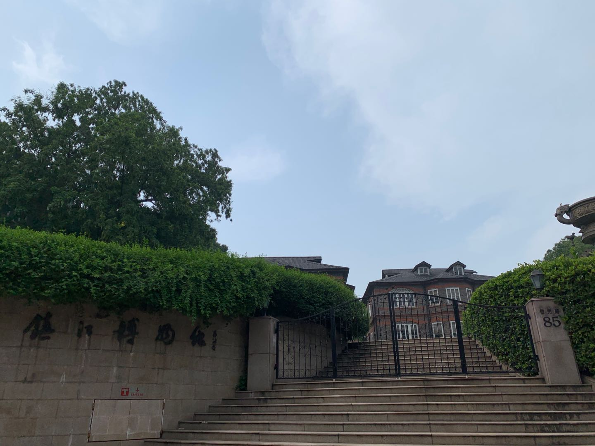
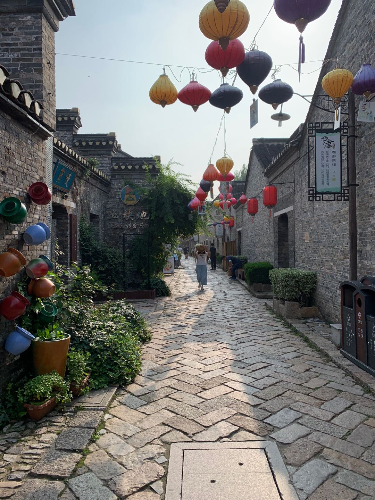

Life Rhythm
Zhenjiang

端午，去镇江旅行。晚上，和璐姐在西津渡吃饭。聊到音乐，她问：“总部的乐队，叫什么名字来着？”，我忘记了（忘记一个名字好容易）。于是，我在群组里，问。
Acker 回答：OTGO。Acker 在群组里，分享了乐队的原创歌曲《生活旋律》和最近的演出视频。
听着歌，阅读文字的表达，很容易流眼泪，容易陷入突然的自我。
当我读到：「我为这忙碌的平凡的心许下期许，要把这生活旋律继续」。我在想，我的生活旋律，是怎样的音乐？让我想一想，我好像是世界上最糟糕的人。
City
城是他山之石，也是这一代人的故事。
城，不是啥好东西。现代文明都建设在城市里，一座又一座的城市。。从古代的攻城略地。。到现在的大国之争。。从战火战乱到经济制裁货币战争。。无一不是在城市中。。 为了城市的经济发展和GDP的增长，为了在城市中弄个地方住，孩子上个学，一批又一批的中产和打工者们度年如日，一晃几年过去就只能祭奠青春。如果你今天选择了这种生活，那就把每一天的时间过得尽量精彩一些，快乐一些，反正不管你咋样，城市旋律依旧，节奏不停歇。。。你都得继续。。。
Trails to muisc garden
Xijindu

Author: yiming
Link: https://estrm.github.io/2020/06/27/travel-life-rhythm/
License: 知识共享署名-非商业性使用 4.0 国际许可协议